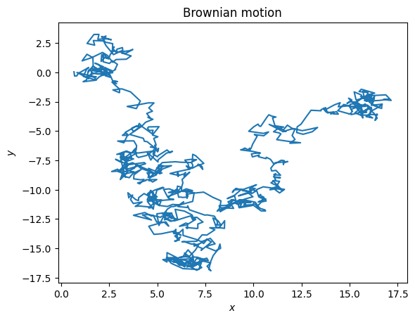
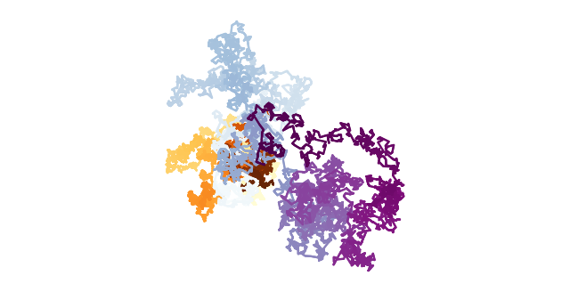

How the cheetah got his spots#
Why aren’t they striped?
And why is Midjourney struggling so much to draw a stripey cheetah?!!?

And it’s not just a cheetah’s spots… there are patterns all around us
We see similarities in systems that seem to share nothing in common

(Sand ripples: By Kempf EK - Own work, CC BY-SA 3.0, https://commons.wikimedia.org/w/index.php?curid=31910106)
Pattern formation is explored in many fields: developmental biology, cell biology and synthetic biology, to physics, mathematics and computer science
Complex Systems Thinkers therefore seek to use mathematical methods to
model and understand the underlying mechanisms driving biological pattern formation; and
quantify the resulting pattern.
What is a pattern?#
We sort of know intuitively. Humans have an uncanny ability to smooth detail in order to see patterns
Neither bland uniformity nor disorderly chaos but something in between with some notion of ‘repetition’
A simple type of pattern is a repeating structure in space, like wallpaper tessellations or symmetries (shifting one’s view by one repeat length results in seeing the same thing). There are also repeating patterns in time, like the seasons.
Alternatively, you can consider something like a dress pattern (prototypes), which allows for the dress to be copied
Possible definitions:
a set of relationships that are satisfied by observations of a system or a collection of systems
a simple kind of emergent property of a system, where the pattern is a property of the system as a whole but is not a property of small parts of the system
a property of a system that allows its description to be shortened as compared to a list of the descriptions of its parts
How do they form?#
How patterns form (pattern formation) and how they are recognised by the brain (pattern recognition) are important areas of study in complex systems
Patterns emerge via via spatio-temporal dynamics
fractals
Rayleigh-Bénard convection
growth processes can both produce honeycomb-like structures,
elastic instability is thought to be responsible for fold patterns on the cerebral cortex of higher animals
…
patterns are likely the result of an interplay of several mechanisms and processes across many scales
Today we will focus on one of the most celebrated mechanisms to explain self-organising spatial structures - Turing reaction-diffusion instability as a source of symmetry breaking
Alan Turing#
 |
.png) |
Well-known for:
Enigma (code used by the Germany Navy) codebreaker during the Second World War and is widely considered to have been critical for ending the war
Pioneer/the father of computer science and all round visionary. Created blueprint for the digital computer — a universal computing device that may store and execute programs. Also outlined the basics of what would later become known as artificial intelligence, Turing test for determining whether machines can think.
Suffered shameful treatment accepting ‘corrective’ hormone therapy (chemical castration) in preference to jail time for ‘homosexual acts’ after the war, precipitating his suicide. (The British government apologised for this in 2009: https://www.theguardian.com/world/2009/sep/11/pm-apology-to-alan-turing)
The chemical basis of morphogenesis#
Turing was ahead of his time in many ways
He is not so well-known for his contributions to a fundamental problem in biology: the mechanism underlying biological regularity of patterns. He was the first to offer an explanation of morphogenesis through chemistry
His prediction was extremely original (no-one was really asking these questions until Turing, he only referenced 6 relevant works!)

Turing, Alan M. The Chemical Basis of Morphogenesis. 1952. Philosophical Transactions of the Royal Society; 237: 37-72 https://royalsocietypublishing.org/doi/10.1098/rstb.1952.0012
This work has now been cited over 16000 times!!
Morphogenesis#
‘Morphogenesis’, from the Greek morphê meaning shape/form and genesis meaning creation (literally “the generation of form”)
General mechanism producing a diverse array of patterns
Morphogens are the ‘shape formers’. They are different chemical signals/substances that react together and diffuse through a plant or animal tissue, one activating and one deactivating growth, to set up patterns of development
Turing was deliberately vague about what these morphogens were. They could be chemicals/molecules/proteins/hormones/genes etc, operating in tissue or cells… It was the 50s lots wasn’t known yet and Turing wasn’t trying to be a biologist
The interaction between activator and inhibitor morphogens leads to the formation of spatial patterns of pigmentation, either through the instability of homogeneous states or the formation of spatial gradients

The theory was largely ignored for several decades (the biological community became fixated with the double-helix structure of DNA a year later and the subsequent development of molecular biology) but is now still active and new examples of these patterns are still being discovered
Interest was kickstarted In the 1970s, Alfred Gierer and Hans Meinhardt reintroduced the ideas of a diffusion-driven instability leading to pattern formation in their study of Hydra, a freshwater invertebrate. They identified the fundamental ingredients: Locally acting activator, and an inhibitor that suppresses pattern elements over longer ranges.

It’s only quite recently been possible to test the idea (with increased computing power + advances in molecular sciences on the bio side) - a common theme in Complex Systems!
Determining what the job of each morphogen is will be critical, as scientists come to programme stem cells to do certain things in the body.
Reaction-diffusion systems#
A process by which complex spatial structures may arise
It is the interaction (or “reaction”) of two morphogens that allows for the autonomous generation of spatial patterns during development via a type of symmetry breaking
Competing interests#
Activator#
Slow-moving activator (the reactant) promotes pigment formation in regions where its concentration is high
tells cell to do something, such as make colored pigment;
tells cell to make more activator; and
tells cell to start making its inhibitor.
Inhibitor (of the activator)#
Fast-moving inhibitor (the autocatalyst), thus acting at longer ranges, inhibits pigment formation in regions where its concentration is high
tells cell to slow down activator production (and thus, ultimately, to make less of itself).
Reaction#
We use \(A\) and \(B\) to denote the activator (reactant) and inhibitor (product) respectively and will explore the specific example of the following chemical reactions:
\(A+2B\rightarrow 3B\)
i.e. a single species of \(A\) will interact with two species of \(B\) to form three species of \(B\) (sort of like predator-prey (i.e. \(B\)-\(A\)) system)
This is part of the Gray-Scott model
For this interaction to happen (with some probability) the particles first have to come into contact with each other.
Diffusion#
But first… Brownian motion - a bridge between the (invisible) atomic and the (observable) macroscopic world
aka Wiener processes, named for Robert Brown [1827], but explained with the kinetic theory of gases by Albert Einstein [1905]
A (microscopic) particle suspended in a fluid (e.g. dust in air) moves in an apparently random motion because of the constant, random collisions of the suspended particle with the quick molecules of the surrounding fluid
It’s a huge number of collisions (like 10^16-10^20/second for gas/water) but the forces from these collisions are not symmetric in both time and space at every instant and so there is a net movement
# https://www.youtube.com/watch?v=7orMPKrYPwE
from IPython.display import YouTubeVideo
display(YouTubeVideo("7orMPKrYPwE", width=400))
# https://www.youtube.com/watch?v=cD3dOlcxVmE
# from IPython.display import YouTubeVideo
# display(YouTubeVideo("cD3dOlcxVmE", width=400))
Brownian motion#
\( \langle x^2 \rangle = 2Dt \)
\(\langle x^2 \rangle\) is the mean square displacement of the particle
\(D\) is the diffusion coefficient
\(t\) is the time elapsed.
The diffusion coefficient \(D\) can be related to other physical quantities through the Stokes-Einstein equation:
\( D = \frac{k_B T}{6 \pi \eta r} \)
\(k_B\) is the Boltzmann constant
\(T\) is the absolute temperature of the fluid
\(\eta\) is the dynamic viscosity of the fluid
\(r\) is the radius of the spherical particle.
By combining these equations, Einstein provided a way to calculate the diffusion coefficient from measurable quantities and to study the properties of the particles and the fluid they are suspended in. This approach allowed for experimental verification and provided a method to estimate Avogadro’s number, thus giving strong support to the atomic theory of matter.
Random walks#
To model this phenomenon a particle evolves in space by taking independent steps in a random direction
After \(n\) steps of unit length in a random walk, a particle will on average find itself a distance from its origin that is proportional to \(\sqrt{n}\)
With many particles performing random walks like this the particles will slowly spread outwards at a certain rate. This is diffusion
Eventually they will fill the space they have to occupy and be evenly mixed, i.e. diffusion should lead to uniformity
Intuitively we know this happens. You smell dinner before you see it and wearing masks in the midst of a pandemic is good.
import numpy as np
import matplotlib.pyplot as plt
from matplotlib.animation import FuncAnimation
def simulate_brownian_motion(num_steps, step_size):
displacements = np.random.normal(loc=0, scale=np.sqrt(step_size), size=(num_steps, 2))
positions = np.cumsum(displacements, axis=0)
return positions
num_steps = 1000
step_size = 0.1
positions = simulate_brownian_motion(num_steps, step_size)
# Create a figure and axis for the animation
fig, ax = plt.subplots()
line, = ax.plot([], [], lw=2)
ax.set_title("Brownian motion")
ax.set_xlabel(r"$x$")
ax.set_ylabel(r"$y$")
ax.set_xlim(-10, 10)
ax.set_ylim(-10, 10)
# Reduce the number of frames for the animation
num_frames = 100
frames = np.linspace(0, num_steps - 1, num_frames, dtype=int)
def init():
line.set_data([], [])
return line,
def update(frame):
line.set_data(positions[:frame, 0], positions[:frame, 1])
return line,
# Create the animation
animation = FuncAnimation(fig, update, frames=frames, init_func=init, blit=True)
# To display the animation in Jupyter Notebook, use the following line:
from IPython.display import HTML
HTML(animation.to_jshtml())
plt.close()
---------------------------------------------------------------------------
ModuleNotFoundError Traceback (most recent call last)
Cell In[2], line 1
----> 1 import numpy as np
2 import matplotlib.pyplot as plt
3 from matplotlib.animation import FuncAnimation
ModuleNotFoundError: No module named 'numpy'
def simulate_brownian_motion(num_steps, step_size):
# Generate random displacements
displacements = np.random.normal(loc=0, scale=np.sqrt(step_size), size=(num_steps, 2))
# Calculate cumulative sum of displacements
positions = np.cumsum(displacements, axis=0)
return positions
# Set the number of steps and step size
num_steps = 1000
step_size = 0.1
# Simulate Brownian motion
positions = simulate_brownian_motion(num_steps, step_size)
# Plot the results
plt.plot(positions[:, 0], positions[:, 1])
plt.title("Brownian motion")
plt.xlabel(r"$x$")
plt.ylabel(r"$y$")
plt.show()

Returning to the example we are considering of the two morphogens…
Let the diffusion of \(B\) (white-blue-purple), \(D_B\) to be twice that of \(A\) (yellow-orange-brown), \(D_A\).
import numpy as np
import matplotlib.pyplot as plt
%matplotlib inline
n = 5000
# Adjust the standard deviation to change diffusion rate.
diffusion_rate_1 = 0.1 # Adjust this value for particle 1
diffusion_rate_2 = 0.2 # Adjust this value for particle 2
x_1 = np.cumsum(diffusion_rate_1 * np.random.randn(n))
y_1 = np.cumsum(diffusion_rate_1 * np.random.randn(n))
x_2 = np.cumsum(diffusion_rate_2 * np.random.randn(n))
y_2 = np.cumsum(diffusion_rate_2 * np.random.randn(n))
# We add 10 intermediary points between two
# successive points. We interpolate x and y.
k = 10
x_1B = np.interp(np.arange(n * k), np.arange(n) * k, x_1)
y_1B = np.interp(np.arange(n * k), np.arange(n) * k, y_1)
x_2B = np.interp(np.arange(n * k), np.arange(n) * k, x_2)
y_2B = np.interp(np.arange(n * k), np.arange(n) * k, y_2)
plt.rcParams['axes.facecolor'] = 'none'
fig, ax = plt.subplots(1, 1, figsize=(8, 4))
fig.patch.set_alpha(0)
ax.scatter(x_1B, y_1B, c=range(n * k), linewidths=0,
marker='o', s=3, cmap=plt.cm.YlOrBr,)
ax.scatter(x_2B, y_2B, c=range(n * k), linewidths=0,
marker='o', s=3, cmap=plt.cm.BuPu,)
ax.axis('equal')
ax.set_axis_off()
plt.show()

Turing instabilities#
Turing considered a chemical system that was in a stable equilibrium state, so that no net reactions were occurring, but that could be destabilised by the presence of diffusion of these chemicals
This is sort of paradoxical - diffusion normally acts to smooth out concentration differences. But Turing showed that it can cause an initially homogeneous system to become patterned
How? Small fluctuations in concentration can lead to a situation where areas with a higher concentration of one chemical promote a reaction that further increases the concentration difference. Over time, this feedback can create distinct patterns.
Regulation#
We will also include:
Feed rate, \(f\): controls the supply of \(A\)
Kill rate, \(k\): controls the decay of \(B\) (converted to \(C\) via the chemical reaction: \(B\rightarrow C\), where \(C\) is an inert product of these irreversible reactions)
This is also lumped in with the ‘reaction’ part of the dynamics (because it isn’t diffusion)
Putting it all together#

So what happens in this system?#
How do we solve this?
The short answer is that we don’t… we simulate it (but this is a ‘solution’ too)
What’s important in our simulations?#
Assuming we have the right reaction equations, we move on to explore the parameters:
\(k\)
\(f\)
\(D_A\)
\(D_B\)
We need to explore (via parameter sweeps) the many combinations (the parameter space) of these parameters
4-dimensional parameter space, maybe 3 if we have a relationship between the diffusions. Hopefully we can fix the diffusions using something anchored with physical meaning
Not all points in the parameter space produce dynamically interesting patterns
What can happen?#
Types of behaviour/global patterns:
stationary states: (\(\dot{A}=0, \dot{B}=0\)) unmoving in time and space
oscillatory solutions
spatio-temporal chaos (turbulence)
instabilities: even in regions that would exhibit stable stationary states in a well-mixed system, the diffusion in the system can destabilise the uniform state by the Turing mechanism and spatial structure spontaneously emerges
bifurcations: The complexity of the patterns of the Gray-Scott model emerges because in a narrow range in parameter space a Hopf bifurcation, a saddle node bifurcation and Turing instabilities are entangled.
Many of the patterns this simple model produces are familiar
Stability analysis lets us find the regimes of \(f\) and \(k\) where interesting things happen. (Some of this will be familiar from MATH3021 but if it isn’t don’t worry, the intuitive understanding of these types of behaviour is sufficient)
Putting all of this together into a complete picture of the model#
Have you seen the Complexity Explorables yet? Warning: You may lose a big part of your day visiting this website! https://www.complexity-explorables.org/explorables/hopfed-turingles/
Another really nice one if you want to play around a bit more: https://visualpde.com/nonlinear-physics/gray-scott.html
And the ‘original’ here: http://web.archive.org/web/19981206145216/http://www.ccsf.caltech.edu/ismap/image.html
Extensions#
The reaction-diffusion system can be modulated by other factors
These influence the formation of the patterns but require extending (and complicating) the model:
Orientation: diffusion can occur faster in one direction than another to give an orientation to the results.
‘Style Map’: the feed and kill rates can vary across the grid to give different patterns in different areas.
Flow: the chemicals can flow across the grid under the influence of an external force to give various dynamic effects.
Size: the scale of the pattern changes when the reaction rate is sped up or slowed down relative to the diffusion rate.
External influences
So why does a cheetah have spots?#
Diverse anatomies from similar genes. There are countless varieties of stripes, spots and scales - each species surely can’t all have their own personal blueprint
Understanding why a zebra has stripes and a cheetah has spots may come down to understanding how the animal shape influences the reaction and diffusion of the relevant morphogens
Returning to understanding a zebra’s or sand-dune’s stripes#
deposition of wind-blown grains.
Formation of ripple is self-enhancing because it captures more sand the bigger it gets (positive i.e. self-reinforcing feedback). Meanwhile depleting the air of sand grains suppressing another ripple for some distance downwind
Pigmentation of zebra skin
Biology benefiting from a reductive ‘physicist’s’ approach.#
More mathematical approaches to biology now take account of the physical forces and constraints on an organism’s development
Biology is messy and complicated, with many confounding factors, which makes it difficult to demonstrate experimentally that a pattern results from a Turing mechanism
Synthetic biological systems are playgrounds to explore basic mechanisms of biology in a controlled environment.
Animal patterns:#


So can patterns emerge from particles: Zebrafish
These patterns are formed by the arrangement of pigments, usually packaged in specialised cells. stripes are made up of thousands of small and distinct dots of colour. Each dot is a single pigment cell. The three cell types that produce the pattern are black melanophores, yellow xanthophores and silver and blue iridophores.
Kit Yates’ study aimed to find out which biological phenomena are crucial for pattern formation and which are just incidental. These sorts of questions can be answered with mathematical modelling
“And then comes the really exciting part. The beauty of mathematical modelling is that once you’re confident your model captures the biology you can start to play around with it and ask biological questions that are difficult to answer through experiments alone.” They were able to explain why the stripes are horizontal instead of vertical like a zebra-mammal. https://theconversation.com/how-mutant-zebrafish-helped-unlock-the-secret-to-their-stripes-new-research-141460
Mice digits as a model for human fingerprints
“If you have any two processes that act [as activator and inhibitor], you can always get periodic patterns out of them,” said Green, pointing to the ripples that form on sand dunes as an example. “Clearly there are no diffusing morphogens at work there. It’s just that the processes have a property you can represent using a diffusion function.
Turing-like mechanisms#
The the molecular mechanisms behind Turing remain difficult to validate experimentally, as many of the kinetic parameters cannot be reliably assessed in biological tissues
Turing-like features in the distribution of species in ecological systems, such as the predator-prey model, in which the prey function as activators, seeking to reproduce and increase their numbers while the predators act as inhibitors, keeping the population in check. Neurons, too, can be described mathematically as activators or inhibitors, encouraging or dampening the firing of other, nearby neurons in the brain.
it is challenging to move from identifying the behavior of a system that seems to follow a Turing mechanism to identifying the specific physical processes that act as activator and inhibitor.
Scientists have tried to apply this basic concept to many different kinds of systems. For instance, neurons in the brain could serve as activators and inhibitors, depending on whether they amplify or dampen the firing of other nearby neurons—possibly the reason why we see certain patterns when we hallucinate. There is evidence for Turing mechanisms at work in zebra-fish stripes, the spacing between hair follicles in mice, feather buds on a bird’s skin, the ridges on a mouse’s palate, as well as the digits on a mouse’s paw.The scientists discovered that in mouse embryos, a molecule called FGF, or fibroblast growth factor, acts as a ridge activator, and SHH, or sonic hedgehog, acts as an inhibitor.
Certain species of Mediterranean ants will pile the dead bodies of ants into structures that seem to exhibit Turing patterns, and there is evidence of Turing patterns in the movement of Azteca ant colonies on coffee farms in Mexico.
Stumbling block: “no one has yet identified the molecules that work for a Turing mechanism in development.”
It might be best to consider Turing’s model as playing a specific development role within the context of a larger biological system, in concert with other factors, rather than as a standalone mechanism. “The Turing process is a piece of the puzzle in understanding how multiple morphogens work together,
I’ve sort of lied to you…#
The reaction-diffusion system we described involves a huge number of particles
Tracking each individual particle’s movement for many many generations is enormously computationally expensive
It can be done (with an agent-based modelling framework like what we will see in a few weeks) but it’s ridiculously complicated (which is why statistical physics aggregates all the particles into average/global properties like temperature).
More importantly, it isn’t necessary to reproduce the observed behaviour.
Remember…#
The modeller’s purpose is absolutely, definitely not to reproduce the system exactly
Instead, we want:
to capture the essence of a system
for simulations to run “quickly”
for the model to scale well to larger inputs

(The first paragraph of Turing’s paper on morphogenesis)
The solutions you saw in the Complexity Explorable were actually the result of a ‘coarse-grained’ model where instead of caring about the individual particles we will lump many of them together into cells and track the cell concentration instead.
We’ll dig into this more in the next session.
How does it fit in with ‘complex systems’ generally?#
Previous topics#
Fractals
When the reaction and diffusion processes in the system are appropriately balanced, it can lead to the formation of self-replicating or self-repeating structures at different scales and fractal-like characteristics.
Upcoming topics#
Networks and synchronisation
We’ve looked at physical stuff reacting and diffusing in a continuous physical space but the same methods and thinking can be applied to more abstract situations such as information reacting and diffusing on a social network.
The interactions and coupling between chemical species can lead to the emergence of synchronised oscillations or pattern formation, where different regions or elements of the system exhibit coordinated behaviour.
On the other hand, the coupling between individual oscillators in such systems can be described through diffusion-like processes by considering the spread or transmission of information/influence between the oscillators
Cellular automata
Expand Wolfram’s principles for classification to continuous real-valued systems to encompass the sorts of patterns you have discovered by varying parameters and initial conditions of the Gray Scott model.
The Gray Scott model that we implemented is effectively a cellular automata used to simulate coarse grained reaction diffusion dynamics.
Agent-based models
Can incorporate reaction-diffusion processes as a component of an agent’s behaviour or as a mechanism influencing agent interactions, allowing exploration of individual behaviour that is influenced by spatially distributed processes.
Explore and play#
https://visualpde.com http://www.karlsims.com/rdtool.html: Karl Sims had an exhibit in the Museum of Science in Boston that was based on this tool, see: http://www.karlsims.com/rd-exhibit.html
Explorables: https://www.complexity-explorables.org/explorables/come-together/ https://www.complexity-explorables.org/explorables/particularly-stuck/ https://www.complexity-explorables.org/explorables/albert-and-carl-friedrich/ https://www.complexity-explorables.org/explorables/scotts-world/ https://www.complexity-explorables.org/explorables/baristas-secret/
ODE definition (revision)#
Recall that an ordinary differential equation (ODE) of order \(n\)
\(F\) is a function of \(x, y\), and the derivatives of \(y\) $\(F\left(x,y,y',\ldots ,y^{(n-1)}\right)=y^{(n)}\)$
The derivatives here are typically time derivatives and so ODEs can describe how the concentrations change with time assuming a well-mixed system
But this is insufficient to model the reaction diffusion system because they do not account for spatial variations, i.e. change is not just in time but in space too.
The spatial distribution and interaction of the substances involved is crucial for understanding the system’s behaviour and emergent patterns. Therefore we must use PDEs.
from IPython.display import YouTubeVideo
display(YouTubeVideo("miT1-tBapt0", width=400))
display(YouTubeVideo("8dTmUr5qKvI", width=400))
# https://www.youtube.com/watch?v=8dTmUr5qKvI
# https://www.youtube.com/watch?v=miT1-tBapt0&t=15s